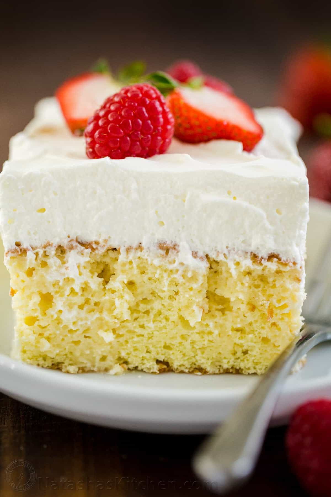

Chocolate Cream Pie
Here at our bakery, we offer many pies; however, our signature dish has become our delicious chocolate cream pie. Our chocolate cream pie has a pre-baked crust, then it's filled with a cooked and cooled chocolate crust. After that, we top it with our signature whipped cream and chocolate shavings.
Chocolate Cake
Whenever you're having a major craving for chocolate cake, come down to our bakery and try our famous chocolate cake. This chocolate cake will be like none you have ever tasted before. It has an airy chocolate mousse between each layer of chocolate cake and topped with a rich chocolate frosting.
Strawberry Cake
Simply Sweet not only offers chocolate cakes but also many other flavors, like strawberry cake. Our strawberry cake is made with a strawberry reduction and has a beautiful shade of pink. It also comes topped with a layered with our famous strawberry cream cheese frosting. We can also layer it or top it with sliced strawberries, so you're ensured to get a taste of strawberries in every bite you take.
Tres Leches Cake
We offer a super soft and extremely moist Tres Leches Cake. It's soaked in our three-milk mixture and with our signature whipped cream. We can also add fresh fruit like strawberries, peaches, or pineapple to add even more flavor..
Strawberry Tarts
At our bakery, you'll find a variety of minute tarts; however, our customer favorite has always been our minute strawberry tart. Most of our tartlets have a pre-baked crust, followed by a fruit-flavored custard, and topped with fresh fruit. Our strawberry tartlets, contain a combination of sweet and tangy for a perfect bite-sized pastry
Vanilla Bean Cupcakes
When you're looking for a classic baked good, nothing hits better than our classic vanilla bean cupcakes. Our vanilla bean cupcakes are made with real and pure vanilla and then topped with classic vanilla buttercream. We also offer a variety of cupcakes if you're not craving a classic vanilla cupcake.
Chocolate Chip Cookies

Another classic and delicious baked good we offer is signature chocolate chip cookies. Our chocolate chip cookies are made from scratch every single day to ensure the best quality and flavor. We also offer a variety of chocolate chips; so you can customize it to your choosing.
Customizations
Simply Sweets understand that there are customers out there who may allergic to certain ingredients. We encourage our customers to call ahead and ask about a menu item if they are concerned. We also take advanced ordered so feel free to give us a call and place an order.